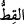
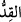
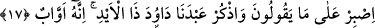

Râğıb kelimenin anlamı ile ilgili olarak şöyle der: (__WORD__)’ın asıl anlamı, enine kesilmiş
şey’dir. Nitekim (__WORD__) de boyuna kesilmiş şeydir. (__WORD__), hükmedilmiş, kesinleşmiş pay
anlamında kullanılır ki buna göre pay kesilmiş, dağıtılmış olmaktadır. İbn Abbas (r.a.)
da âyeti bu şekilde açıklamıştır. Buna göre âyetin mânâsı şudur: Muhammed’in bizi
tehdîd edip durduğu o azaptan payımıza düşen neyse hemen ver; o korkunç sesle
başlayacak olan hesap gününe erteleme! İnce bir deri parçası (kırtâs) olduğu için
ödülün bir yüzüne (sayfasına) de (__WORD__) denir. O zaman mânâ, amel defterlerimizi hemen
ver de neler yapmışız bir görelim! şeklinde olur.
Sehl b. Abdullah et-Tüsterî der ki: “Ölümü ancak şu üç kişi ister:
1- Ölümden sonra neler olacağını bilmeyen
2- Allah’ın güç dâiresinden kaçan
3- Allah’a ulaşmayı şiddetle arzulayan bir Allah aşığı.”
et-Te’vîlâtü’n-Necmiyye’de der ki: Burada, süflî-habîs nefislerin, karakterleri îcâbı
süflî şeylere meyyâl olduklarına işâret edilmektedir. Bu süflî şeyler, dünyada hayvânî
arzulardan elde edilen zevkler; âhirette ise esfel-i sâfilîn olan cehennemdir. Nitekim
ulvî-lâtif kalpler de karakterleri îcâbı, ulvî şeylere meyyâldırlar. Bu ulvî şeyler ise
dünyada tâatlerden tad alma ve ilâhî yakınlıkların tadına varma; âhirette de a’lâ-i
illiyyîn olan cennetlerdir. Ayrıca kudsî ruhlar da özellikleri gereği Hakk’ı gösteren
şeylere; gerek cemâl gerekse celâl nurlarını müşâhede etmeğe müştaktırlar. Bu
sınıflardan her biri, karakterleri gereği kendi tercihlerinin bulunmadığı bir câzibe ile
cezbedilmektedirler. Tıpkı mıknatısın demiri çekmesi ve demirin de kendi tercihi
olmaksızın ve hattâ zarûrî olarak karakteri gereği mıknatısa meyletmesi gibi.
Mesnevî’de der ki:
Yeryüzünde, gökyüzünde ne varsa hepsi zerre zerre,
Kehribar gibi kendi cinsini çekmektedir.
17. (Rasûlüm!) Onların söylediklerine sabret, kulumuz Dâvûd’u, o kuvvet sâhibi
zâtı hatırla. O, hep Allah’a yönelirdi.
“(Rasûlüm!)” Yâ Muhammed! “onların” yâni Kureyş kâfirlerinin azâbı hemen
istediklerini ifâde ederken kullandıkları “Bizim payımızı hesap gününden önce ver”
şeklindeki sözleri de dâhil “söylediklerine,” sarfettikleri boş sözlere “sabret.” Çünkü
çok yakında Allah onlara bu isteklerini vererek sana zafer ihsân edecek.
Şah Kirmânî der ki: “Sabır, üç unsurdan oluşur:
1- Şikâyeti bırakmak